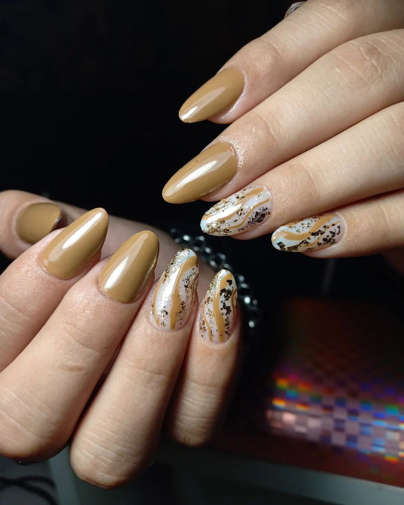
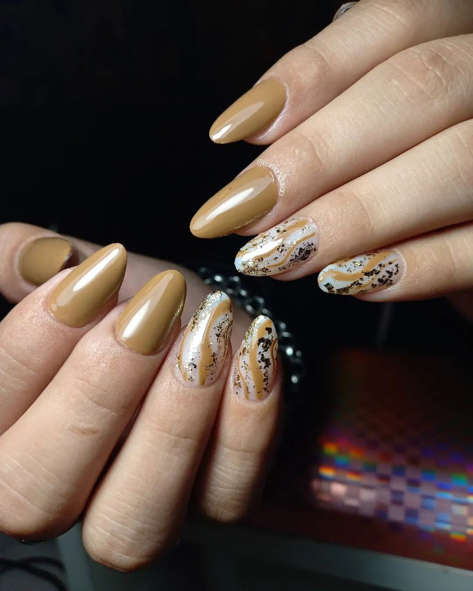
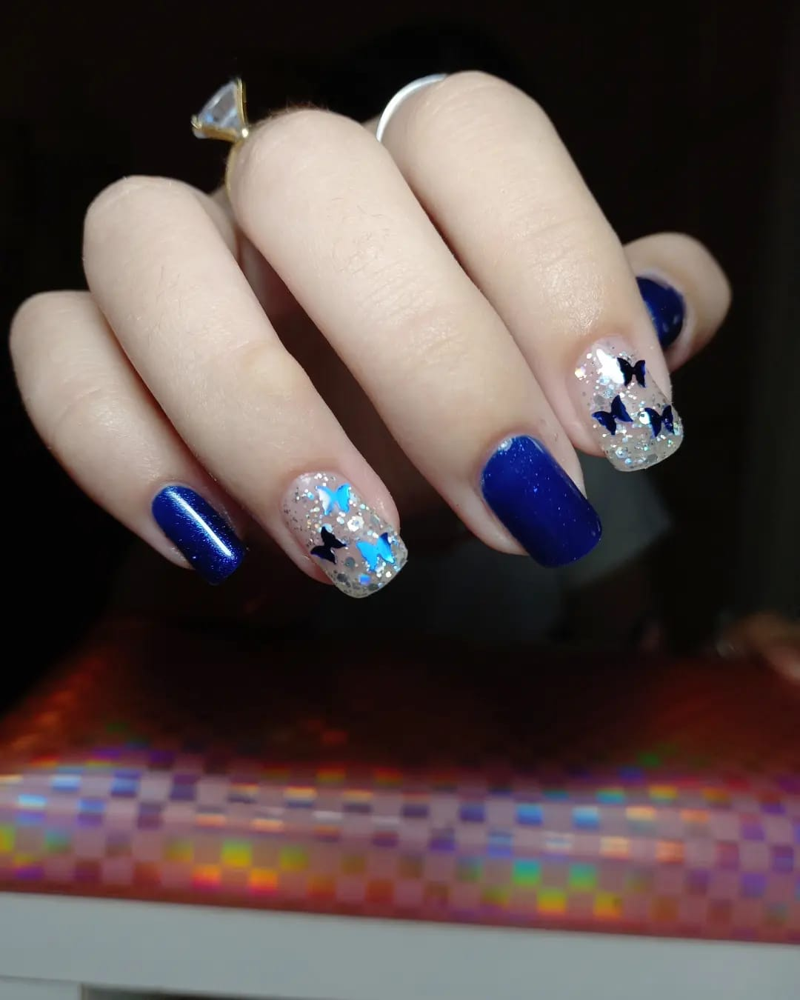
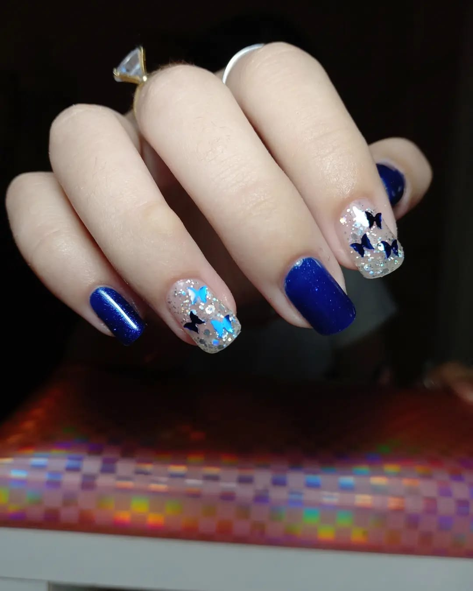

Nosotros
Mi nombre es Lucía Samman, tengo 23 años y soy una apasionada de la manicura. Desde hace más de un año, he dedicado mi tiempo y esfuerzo a perfeccionar el arte del cuidado y diseño de uñas, desarrollando una experiencia significativa en este campo. Trabajando de manera independiente, he tenido la oportunidad de ofrecer a mis clientas un servicio personalizado y de alta calidad, adaptándome siempre a las últimas tendencias y técnicas.
Además de mi dedicación a la manicura, también soy estudiante de Ingeniería Agrónoma. Esta combinación de estudios me ha permitido desarrollar una disciplina y una atención al detalle que aplico en todos los aspectos de mi trabajo. Mi objetivo es seguir creciendo en ambos campos, fusionando creatividad y conocimiento técnico para ofrecer un servicio integral y único.
Estoy comprometida con la satisfacción de mis clientas, garantizando una experiencia relajante y resultados impecables en cada visita. Estoy aquí para ayudarte a lucir y sentirte lo mejor posible.
Nuestros Proyectos
 

 
